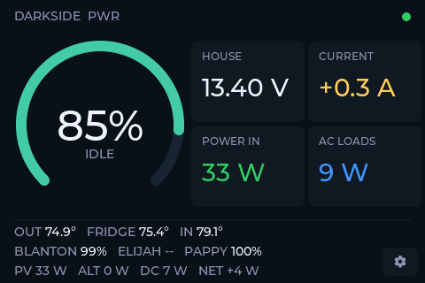

DARKSIDE PWR — web flasher
A Victron GX power monitor for the ELECROW CrowPanel Advance 3.5" (ESP32-S3, 480×320 touch). Local Modbus TCP — no cloud, no keys. Flash it straight from this page, then set everything up on the touchscreen.

Flash the latest firmware — plug the panel into this computer with a data USB-C cable, then:
Needs Chrome or Edge on desktop (Web Serial). Pick the
usbmodem / ttyACM port when prompted.
Panel still on factory firmware?
If connecting fails, hold BOOT, tap RST,
release BOOT, and try again — the factory image blocks the
automatic bootloader entry once. After the first flash it just works.
AFTER FLASHING
- The panel boots to the power screen and says tap the gear to set up.
- Gear → pick your Wi-Fi → type the password on-screen → SAVE.
- On your GX: Settings → Integrations →
Modbus TCP Server = Enabled. If it isn't
venus.local, type its IP in the GX ADDRESS field. - Battery, solar, AC, and the CONTROL page work immediately on any Victron system.
Heads up: this stock image ships
with the reference installation's sensor list (three temperature
sensors, three LPG tanks, and its MultiPlus/solar unit ids). Rows that
don't match your system simply show --. To name your own
sensors and map your own devices, do a quick local build — the
Setup Guide walks through it, including the on-device
V sweep that discovers your unit ids.